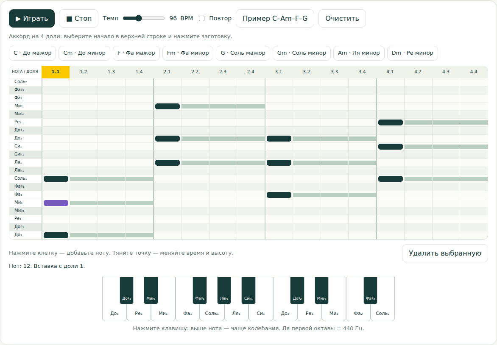
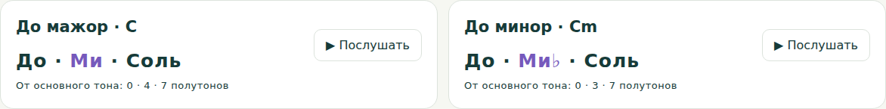
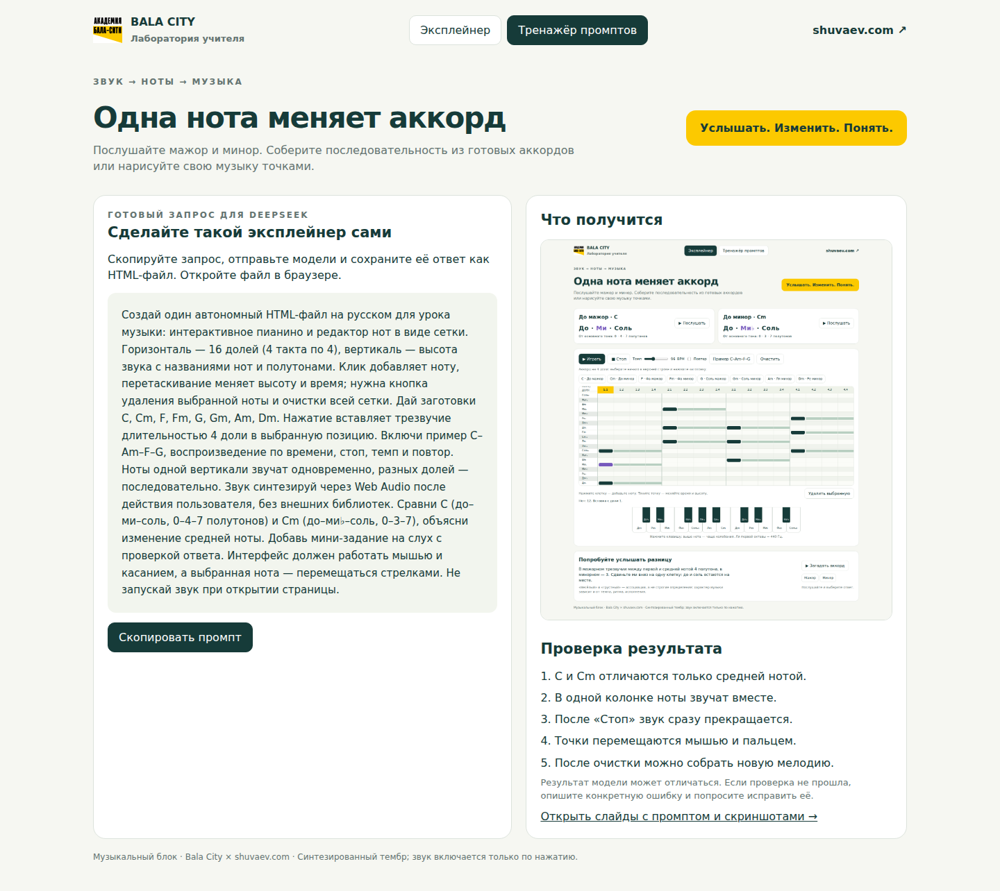

<!doctype html><html lang="ru"><meta charset="utf-8"><meta name="viewport" content="width=device-width,initial-scale=1"><title>Bala City · Музыка · Слайды</title><style>*{box-sizing:border-box}body{margin:0;background:#dce3dc;font:16px Arial}nav{padding:18px;text-align:center}a{color:#163b39}.slide{width:960px;height:540px;position:relative;margin:24px auto;overflow:hidden;box-shadow:0 10px 30px #163b3920}@media print{nav{display:none}.slide{margin:0;page-break-after:always;box-shadow:none}@page{size:960px 540px;margin:0}}</style><nav><a href="index.html">← Открыть интерактивный тренажёр и интерактивный тренажёр</a> · Три слайда для основной презентации</nav><section class="slide"><div style="position:absolute;inset:0;background:#f6f7f2;color:#163b39;font-family:Arial,sans-serif;padding:34px 40px;box-sizing:border-box">
 <div style="display:flex;align-items:center;justify-content:space-between"><div style="font-size:12px;font-weight:700;letter-spacing:2px">BALA CITY · МУЗЫКАЛЬНАЯ ЛАБОРАТОРИЯ</div><div style="font-size:14px;font-weight:700">shuvaev.com</div></div>
 <div style="font-size:32px;font-weight:700;line-height:1.15;margin-top:24px">Музыку можно собрать руками</div>
 <div style="display:flex;gap:26px;margin-top:22px;height:326px"><div style="width:330px;flex-shrink:0"><div style="font-size:12px;font-weight:700;letter-spacing:1px;background:#fcc900;padding:9px 12px;border-radius:8px;margin-bottom:16px">ПРОМПТ → РАБОЧИЙ Интерактивный тренажёр</div><div style="font-size:19px;line-height:1.5"><span>Создай пианино и сетку нот.</span><br><span></span><br><span>Дай готовые аккорды, перетаскивание точек, темп, воспроизведение и очистку.</span><br><span></span><br><span>Всё — в одном HTML-файле.</span></div></div><div style="flex:1;background:#fff;border:1px solid #dce3dc;border-radius:14px;padding:12px;display:flex;align-items:center;justify-content:center"></div></div><div style="position:absolute;bottom:20px;left:40px;right:40px;display:flex;justify-content:space-between;font-size:12px;color:#647471"><span>Демонстрация: запустить C–Am–F–G, затем передвинуть одну ноту.</span><span>01 / 03</span></div></div></section><section class="slide"><div style="position:absolute;inset:0;background:#f6f7f2;color:#163b39;font-family:Arial,sans-serif;padding:34px 40px;box-sizing:border-box">
 <div style="display:flex;align-items:center;justify-content:space-between"><div style="font-size:12px;font-weight:700;letter-spacing:2px">BALA CITY · МУЗЫКАЛЬНАЯ ЛАБОРАТОРИЯ</div><div style="font-size:14px;font-weight:700">shuvaev.com</div></div>
 <div style="font-size:32px;font-weight:700;line-height:1.15;margin-top:24px">Мажор → минор: меняется одна нота</div>
 <div style="display:flex;gap:26px;margin-top:22px;height:326px"><div style="width:330px;flex-shrink:0"><div style="font-size:12px;font-weight:700;letter-spacing:1px;background:#fcc900;padding:9px 12px;border-radius:8px;margin-bottom:16px">ПОСЛУШАТЬ И СРАВНИТЬ</div><div style="font-size:19px;line-height:1.5"><span>До мажор: до–ми–соль.</span><br><span>До минор: до–ми♭–соль.</span><br><span></span><br><span>Опустите среднюю ноту на полутон.</span><br><span></span><br><span>Основание и вершина трезвучия остаются прежними.</span></div></div><div style="flex:1;background:#fff;border:1px solid #dce3dc;border-radius:14px;padding:12px;display:flex;align-items:center;justify-content:center"></div></div><div style="position:absolute;bottom:20px;left:40px;right:40px;display:flex;justify-content:space-between;font-size:12px;color:#647471"><span>Ноты одной вертикали звучат вместе; разные позиции — последовательно.</span><span>02 / 03</span></div></div></section><section class="slide"><div style="position:absolute;inset:0;background:#f6f7f2;color:#163b39;font-family:Arial,sans-serif;padding:34px 40px;box-sizing:border-box">
 <div style="display:flex;align-items:center;justify-content:space-between"><div style="font-size:12px;font-weight:700;letter-spacing:2px">BALA CITY · МУЗЫКАЛЬНАЯ ЛАБОРАТОРИЯ</div><div style="font-size:14px;font-weight:700">shuvaev.com</div></div>
 <div style="font-size:32px;font-weight:700;line-height:1.15;margin-top:24px">От готового примера — к своему</div>
 <div style="display:flex;gap:26px;margin-top:22px;height:326px"><div style="width:330px;flex-shrink:0"><div style="font-size:12px;font-weight:700;letter-spacing:1px;background:#fcc900;padding:9px 12px;border-radius:8px;margin-bottom:16px">ПРАКТИКА ДЛЯ УЧИТЕЛЯ</div><div style="font-size:19px;line-height:1.5"><span>Откройте интерактивный тренажёр и скопируйте полный промпт в DeepSeek.</span><br><span></span><br><span>Проверьте звук, движение нот и остановку.</span><br><span></span><br><span>Задание ученику: собрать мелодию и изменить её характер.</span></div></div><div style="flex:1;background:#fff;border:1px solid #dce3dc;border-radius:14px;padding:12px;display:flex;align-items:center;justify-content:center"></div></div><div style="position:absolute;bottom:20px;left:40px;right:40px;display:flex;justify-content:space-between;font-size:12px;color:#647471"><span>Материалы: index.html → «Интерактивный тренажёр промптов». Скриншоты сняты с работающего примера.</span><span>03 / 03</span></div></div></section></html>